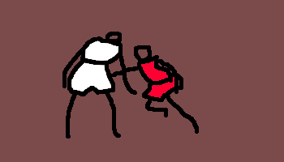
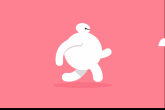

个人简历
-
熟练掌握HTML应用。95%
 熟练掌握CSS属性及应用
95%
熟练掌握CSS属性及应用
95% Jquery、Zepto、AngularJs、Recat、Avalon等
80%了解并熟练应用GitHub工作80%了解并会对gulp自动化工具进行应用80%
熟练掌握CSS属性及应用
Jquery、Zepto、AngularJs、Recat、Avalon等
了解并熟练应用GitHub工作了解并会对gulp自动化工具进行应用
Jquery、Zepto、AngularJs、Recat、Avalon等
80%了解并熟练应用GitHub工作80%了解并会对gulp自动化工具进行应用80%
熟练掌握CSS属性及应用
Jquery、Zepto、AngularJs、Recat、Avalon等
了解并熟练应用GitHub工作了解并会对gulp自动化工具进行应用
个人经历
2015.3.15-2015.6.14
进入郑州某公司进行为其三个月的实习，主要工作为网页的界面搭构，及一些样式的书写
2015.7.1-2016.11.8
大学毕业，继续留在该公司继续工作，主要工作增加了一些特效的实现，包括参与一些移动端，PC端，混合式开发等项目。
2016.11.10
辞职来到上海，希望在这里可以找到一个新的平台，走向更高更远的地方...
2015年
2016

无兄弟,不篮球.(团队协作,很重要.)

跑步是一种积极的人生态度.(可以锻炼自身抗压能力.)
 敲代码是我最大的乐趣,这个怎能忘记.
敲代码是我最大的乐趣,这个怎能忘记.
敲代码是我最大的乐趣,这个怎能忘记.
技能
作品
经历
兴趣
我的